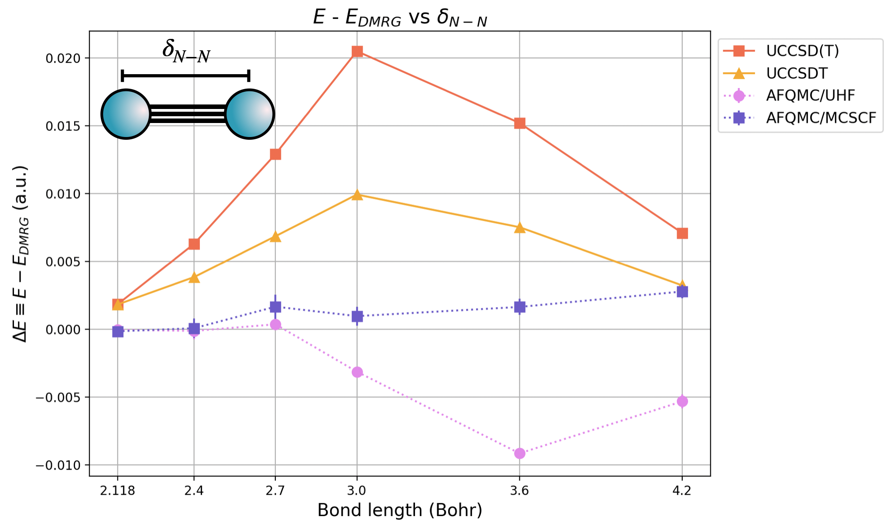
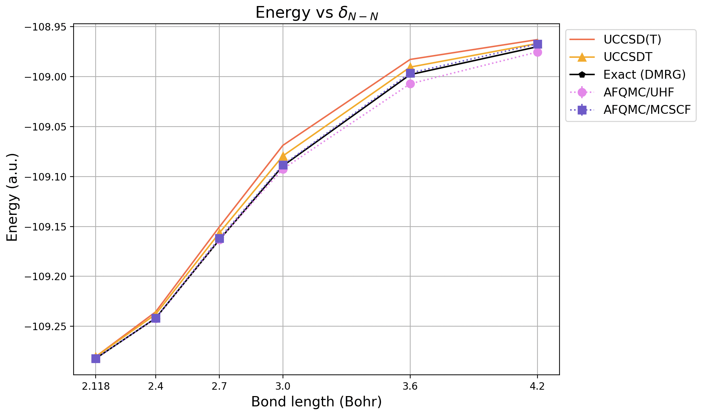

Download this notebook (.ipynb + data files)
3. N₂ Molecule: Bond Stretching and Multi-Slater Trial Wavefunctions#
Goal: This example demonstrates how to compute the potential energy curve (PEC) of a diatomic molecule using an appropriate trial wavefunction.
3.1. What You Will Learn#
How to select the number of Slater determinants to include in the trial wavefunction, balancing computational cost and accuracy
How to automate the computation of a potential energy curve using safiretools within Python
3.2. Run the Code Block Below to Set Up the Example#
# create scratch directory in notebook path
%mkdir -p {_dh[0]}/data
%cd -q {_dh[0]}/data
3.3. The Nitrogen Dimer#
Diatomic molecules display strong static electron correlation effects (i.e. correlation due to many energetically proximate electron configurations) in the intermediate bond length regime. The \(N_2\) molecule is a notorious example and has historically been used to benchmark the accuracy of quantum chemistry approaches [1]. Below is a plot of the error in the energy, relative to exact results from DRMG, from reference [1].

We have included both CCSD(T) results, as well as CCSDT results for reference. There are two AFQMC curves, one using a UHF trial wavefunction, and one using a truncated CASSCF(12o,6e) trial wavefunction. For AFQMC, the stochastic uncertainty is smaller than the symbol size.
For bond lengths close to the equilibrium bond length of 2.118 Bohr, AFQMC agrees with exact results to well within chemical accuracy ( \( 1 \mathrm{kcal}/\mathrm{mol} ≈ 1.6\,\mathrm{mHa}\)) regardless of the trial wavefunction used. For intermediate and stretched bond lengths, the trial wavefunction from MCSCF (in this case, from CASSCF(12o,6e)) is necessary to chemical accuracy using AFQMC across the PEC. Still, for all nearly all bond lengths, AFQMC with a UHF trial wavefunction produces more accurate results, in terms of absolute error, than either the quantum chemistry gold standard method CCSD(T) or CCSDT. AFQMC with a CASSCF(12o,6e) trial wavefunction outperforms both CCSD(T) and CCSDT in terms of accuracy at all bond lengths.
Next, we will reproduce the PEC of the Nitrogen dimer using AFQMC / CASSCF(12o,6e) trial wavefunctions.
3.3.1. References#
[1] W. A. Al-Saidi, S. Zhang, H. Krakauer. “Bond breaking with auxiliary-field quantum Monte Carlo.” J. Chem. Phys. 127, 144101 (2007).
3.4. Converging AFQMC in the Quality of the Trial Wavefunction#
As we saw in B Atom – Semistochastic Heat-Bath CI (SHCI) Trial Wavefunction, AFQMC trial wavefunctions are typically multi-Slater determinant expansions of the form form
where \( C_{n} \) are CI coefficients, and \(| \Phi_n \rangle\) are Slater determinants. Typically, CI trial wavefunctions are truncated CASSCF or selected CI (SCI) wavefunctions.
For quantum chemistry, AFQMC uses the phaseless approximation in order to control the fermionic sign / phase problem at the cost of introducing a removable bias. This bias can be systematically removed by using a better trial wavefunction. If we start with a decent CASSCF or SCI wavefunction, then we can characterize the quality of a trial wavefunction by the number of Slater determinants that are included in the trial wavefunction, \(N_\mathrm{det}\).
A critical step in achieving high-accuracy results, therefore, is to converge the AFQMC energy in \(N_\mathrm{det}\)
SAFIRE provides a keyword in the wavefunction json input block to limit the number of Slater determinants, ndets_to_read, that are actually read from the HDF5 wavefunction file. Here is a sample json input block.
{
"output_name": "qmc",
"seed": 42,
"execute": {
"wavefunction": {
"filename": "your_wfn_file.h5",
"ndets_to_read": 500
},
"hamiltonian": {
"filename": "your_hamiltonian_file.h5"
},
"timestep": 0.01,
"steps": 10000,
"num_walkers": 1600
}
}
In this case, a maximum of 500 Slater determinants will be read from your_wfn_file.h5 regardless of how many Slater determinants were
written to the file.
We will save significantly more Slater determinants to the wavefunction HDF5 file than we expect to need.
This allows us to reuse the same wavefunction file while controlling the trial wavefunction quality via the ndets_to_read parameter.
3.4.1. Getting an Orthonormal Basis and a Trial Wavefunction#
We will now setup an AFQMC calculation. As you should now be familiar with from previous tutorials, we will need to choose an orthonormal orbital basis to work within. Since we will be using CASSCF trial wavefunctions, it is convenient to use the set of optimized CASSCF orbitals,
Run the code block below in order to run CASSCF in PySCF (alternatively, run your favorite Quantum Chemistry code, and save the CASSCF wavefunction in the wavefunction HDF5 file).
from pyscf import gto,scf,mcscf
from safiretools import Wavefunction
# Here, we'll generate the mol object
delta = 3.0 # Bohr
atom = f'''
N 0. 0. {delta/2}
N 0. 0. -{delta/2}
'''
mol = gto.M(
atom = atom,
basis = 'ccpvdz',
unit = 'Bohr'
)
# run CASSCF to get an orbital basis AND a CAS wavefunction
rhf = scf.RHF(mol)
rhf.run()
mc = mcscf.CASSCF(rhf, 12, 6).run() # (12o,6e)
# the CAS wavefunction
wavefunction = Wavefunction.from_pyscf_cas(
mc,
tol=1.0e-3, # use a small value to save *many* determinants.
max_det=2000
)
3.4.2. Checkpoint#
At this point, you should have a CASSCF trial wavefunction saved in an SAFIRE HDF5 file (we used afqmc.h5 as our filename, but you are free to use whatever name you would like).
You will also need the CASSCF orbitals in order to represent the Hamiltonian in that basis.
They are held by the mc object itself.
3.5. Save the Hamiltonian#
We have already chosen the set of CASSCF orbitals as a trial wavefunction. We will now build the Hamiltonian in the basis of CASSCF orbitals, and save it to an SAFIRE HDF5 Hamiltonian file.
MolecularHamiltonian.from_pyscf() takes the SCF object whose one-body Hamiltonian it uses, and
basis= the object whose orbitals it is expressed in; .to_hdf5() writes the result out.
.to_hdf5() replaces only the Hamiltonian in the file it is given, so it can be added to the
file that already holds the trial wavefunction.
Without basis=mc, from_pyscf() would use the RHF orbitals, while the CAS determinants are occupations of the CASSCF ones. The Hamiltonian and the trial wavefunction must share a basis.
from safiretools import MolecularHamiltonian
# the Hamiltonian, in the basis of the CASSCF orbitals
hamiltonian = MolecularHamiltonian.from_pyscf(
rhf,
basis = mc,
chol_cut = 1e-5,
verbose=True
)
3.5.1. Checkpoint#
In addition to the trial wavefunction HDF5 file from before, you should also now have a Hamiltonian HDF5 file. We saved both the trial wavefunction and the Hamiltonian into a file called afqmc.h5, but you can use whatever file name(s) you would like. Simply update the code blocks based on your filenames.
3.5.2. Run SAFIRE#
Before we move on to computing the PEC, we need to converge the AFQMC energy in \(N_\mathrm{det}\). To avoid doing this for every point on the PEC, we will simply choose a point on the PEC where we expect the most static correlation, converge the AFQMC energy in \(N_\mathrm{det}\) at that point, and use that converged \(N_\mathrm{det}\) value uniformly across the entire PEC. This avoids running many calculations at each point on the PEC to check convergence at the cost of perhaps too many Slater determinants at some points on the PEC.
Again, we will use the ndets_to_read keyword in the wavefunction input block to limit the number of Slater determinants.
In the code block below, you will notice that we are setting,
"wavefunction": {
"filename": wavefunction,
"ndets_to_read": ndet
}
in the execute_options dictionary.
write_json() will append settings within an existing input block when they are passed in this way.
For example,
write_jobfile(
"afqmc.json",
{
"execute": {
"wavefunction": {
"filename": "afqmc.h5",
"ndets_to_read": 500
},
"hamiltonian": {
"filename": "afqmc.h5"
},
"timestep": 0.01,
"steps": 10000,
"num_walkers": 200
}
}
)
will generate a wavefunction block that points to the wavefunction file, with the following contents:
{
"execute": {
"wavefunction": {
"filename": "afqmc.h5",
"ndets_to_read": 500
},
"hamiltonian": {
"filename": "afqmc.h5"
},
"timestep": 0.01,
"steps": 10000,
"num_walkers": 200
}
}
Run the code block below in order to compute \(E_\mathrm{AFQMC}\) vs \(N_\mathrm{det}\) Note: This might take some time. You might want to run this on a computing cluster instead.
from safiretools import Results, write_jobfile
ndets = [50,250,500,750] # list of Ndet values to run
energies = []
stochastic_uncertainties = []
# compute E(N_det) for the CAS trial wavefunction
for ndet in ndets:
write_jobfile(
f"afqmc_ndet{ndet}.json",
{
"seed": 42,
"execute": {
"wavefunction": {
"filename": wavefunction,
"ndets_to_read": ndet
},
"hamiltonian": hamiltonian,
"timestep": 0.01,
"steps": 10000,
"equilibration_steps": 500,
"measure_interval": 10,
"population_control_interval": 10,
"walker_ortho_interval": 10,
"num_walkers": 320
}
}
)
!mpirun -n 16 $$AFQMC_EXEC afqmc_ndet{ndet}.json
E, dE = Results(f"afqmc_ndet{ndet}.results.h5").average("Energy")
E, dE = E.real, dE.real
energies.append(E)
stochastic_uncertainties.append(dE)
print(f" [Result] {E} {dE}")
3.5.3. Plot \(E_\mathrm{AFQMC}\) vs \(N_\mathrm{det}\)#
# plot the results
import matplotlib.pyplot as plt
plt.errorbar(ndets, energies, yerr=stochastic_uncertainties, fmt='o:')
plt.xlabel("Number of Slater determinants")
plt.ylabel("Energy (Ha)")
plt.title("Convergence of AFQMC in the number of Slater determinants")
plt.show()
3.5.4. Result#
From the plot of energy vs \(N_\mathrm{det}\), we have converged the AFQMC energy to within our target stochastic uncertainty of less than 1.6 mHa at about \(N_\mathrm{det} = 500\). Since we performed this test at a point on the PEC where there are strong static correlation effects, we expect this value to provide converged results across the PEC. Now, we can automate the calculation of the PEC using this value for \(N_\mathrm{det}\).
3.6. Automating the Computation of the PEC Using Python / safiretools#
Now that we have converged \(E_\mathrm{AFQMC}\) in \(N_\mathrm{det}\), we are ready to compute the PEC. In the code block below, we have included a function that performs all of the steps that we have already performed (excluding converging \(E_\mathrm{AFQMC}\) in \(N_\mathrm{det}\)) given a value of the \(N_2\) bond length, \(\delta_\mathrm{N-N}\).
Specifically, given \(\delta_\mathrm{N-N}\) and ndets_to_read, the function automates:
running CASSCF using PySCF (for convenience), and saving a truncated CASSCF wavefunction to the SAFIRE HDF5 format.
building and saving the Hamiltonian in the basis of CASSCF orbitals to the SAFIRE HDF5 format.
writing the JSON job file, with our chosen value of
ndets_to_read, and running SAFIRE.Extracting the AFQMC energy using
safiretools.
def run_afqmc_on_dimer(delta,ndets_to_read=None):
print(f"Running AFQMC on dimer with bond length {delta:.4f} Angstroms")
# 1. run CASSCF to get a basis and a trial wavefunction
atom = f'''
N 0. 0. {delta/2}
N 0. 0. -{delta/2}
'''
mol = gto.M(
atom = atom,
basis = 'ccpvdz',
unit = 'Bohr'
)
rhf = scf.RHF(mol)
rhf.run()
mc = mcscf.CASSCF(rhf, 12, 6).run() # (12o,6e)
# the CAS wavefunction
wavefunction = Wavefunction.from_pyscf_cas(
mc,
tol= 1.0e-4,
max_det=10000
)
# 2. the Hamiltonian, in the CASSCF orbital basis the determinants are expressed in
chol_tol = 1e-5
hamiltonian = MolecularHamiltonian.from_pyscf(
rhf,
basis=mc,
chol_cut=chol_tol,
verbose=True
)
# write JSON job file, which also writes the wavefunction and the Hamiltonian to HDF5
name = f"afqmc_{delta:.4f}"
write_jobfile(
f"{name}.json",
{
"seed": 42,
"execute": {
"timestep": 0.01,
"steps": 3200,
"equilibration_steps": 500,
"measure_interval": 10,
"population_control_interval": 10,
"walker_ortho_interval": 10,
"num_walkers": 320,
"wavefunction": {
"filename": wavefunction,
"ndets_to_read": ndets_to_read
},
"hamiltonian": hamiltonian
}
}
)
print("Running AFQMC",flush=True)
!mpirun -n 16 $$AFQMC_EXEC {name}.json
E, dE = Results(f"{name}.results.h5").average("Energy")
E, dE = E.real, dE.real
print(f" [Result] {delta} {E} {dE}")
return delta, E, dE
3.6.1. Compute the PEC#
Now we can use the run_afqmc_on_dimer() function to compute the PEC of the \(N_2\) molecule.
# we can simply use the automation function above to compute the PEC
# full dataset from the paper
# bondlengths = [2.118,2.4,2.7,3.0,3.6,4.2]
# reduced dataset for the example
bondlengths = [2.118,2.7,3.6]
ndets_to_read = 500
energies = []
stochastic_uncertainties = []
for delta in bondlengths:
_, E, dE = run_afqmc_on_dimer(delta,ndets_to_read)
energies.append(E)
stochastic_uncertainties.append(dE)
3.6.2. Plot the PEC#
Now, we are ready to plot the PEC to see our results.
plt.errorbar(bondlengths, energies, yerr=stochastic_uncertainties, fmt='o:', label="AFQMC/CASSCF")
plt.xlabel("Bond length (Bohr)")
plt.ylabel("Energy (Ha)")
plt.title(r"$N_2$ molecule PEC")
plt.grid(True)
plt.tight_layout()
plt.show()
Compare this with the PEC generated using the data from the original paper.

3.7. Summary#
You have computed the potential energy curve (PEC) of the \(N_2\) molecule, which is a standard benchmarking system in quantum chemistry.
3.7.1. What You Learned#
How to select the number of Slater determinants to include in the trial wavefunction, balancing computational cost and accuracy
How to automate the computation of a potential energy curve using safiretools within Python